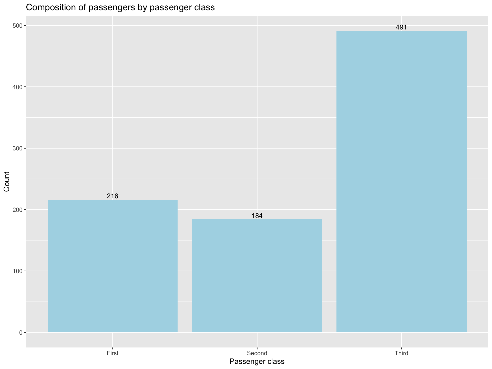
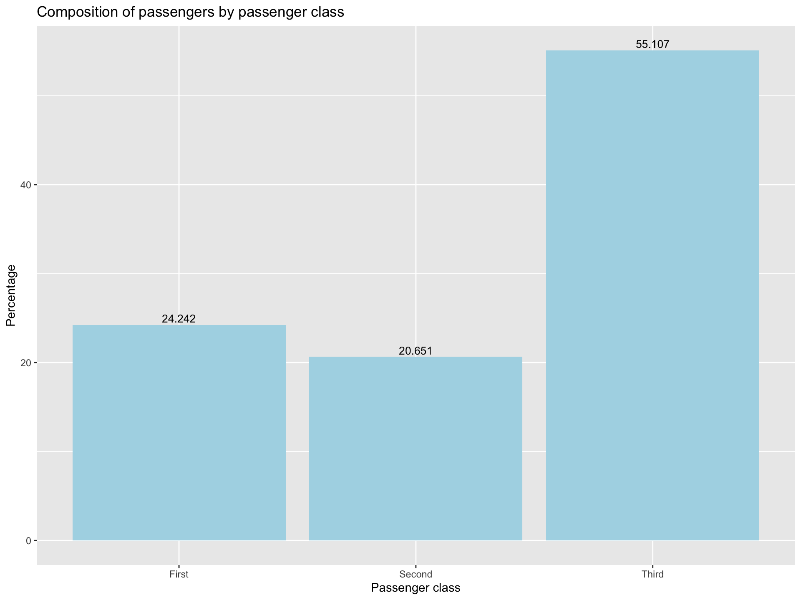
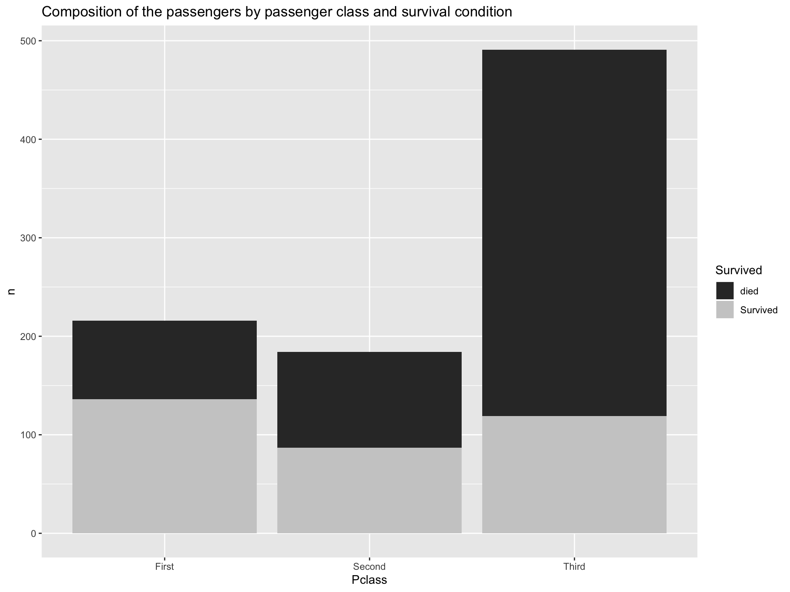
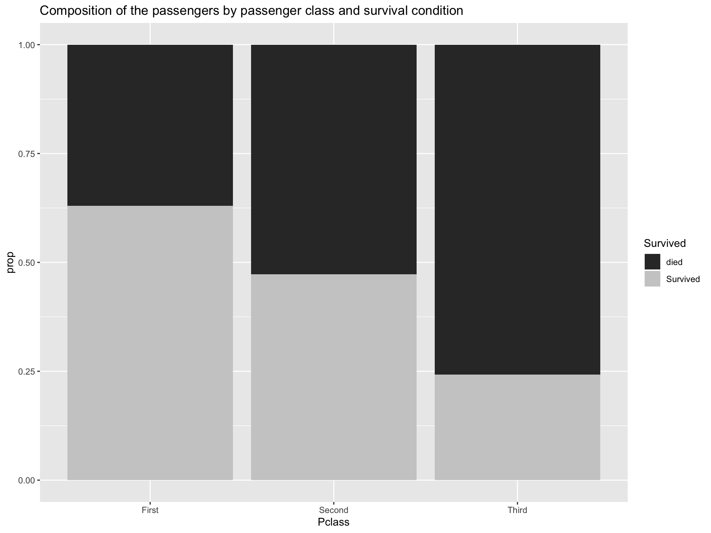
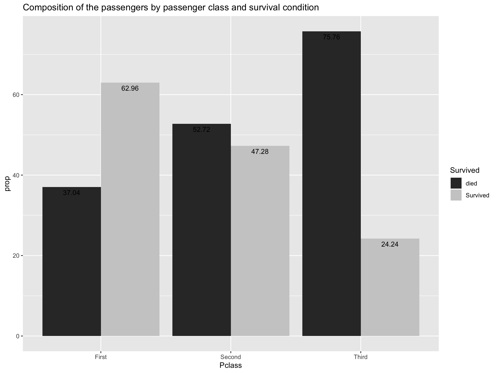
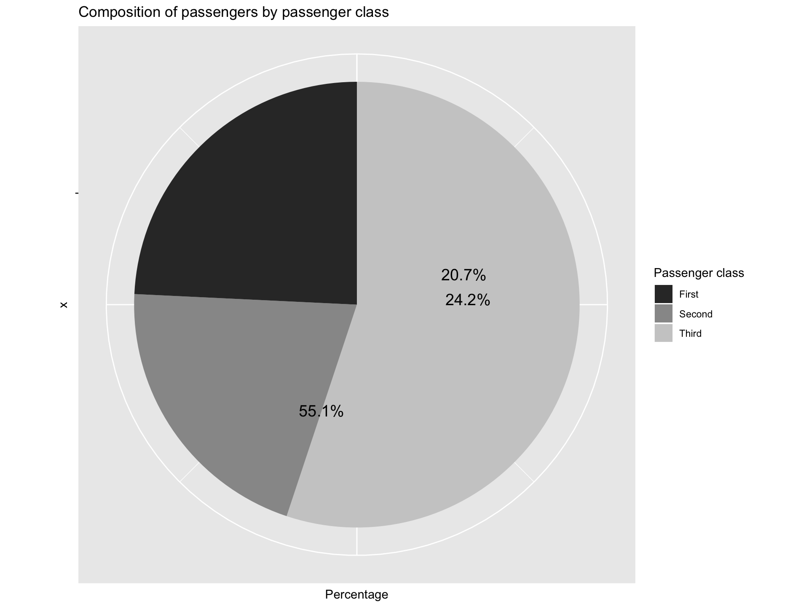
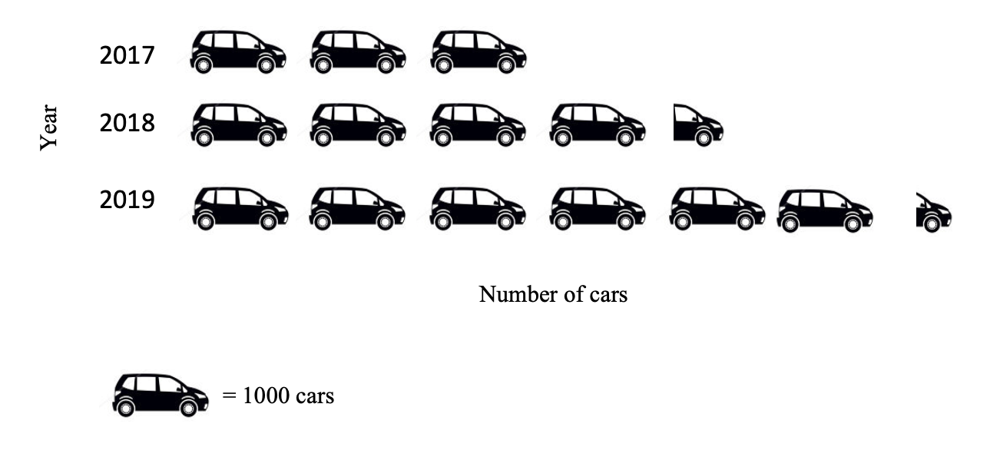
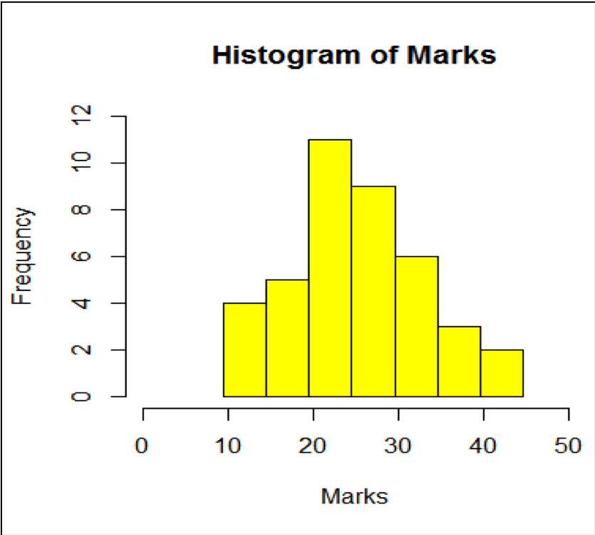
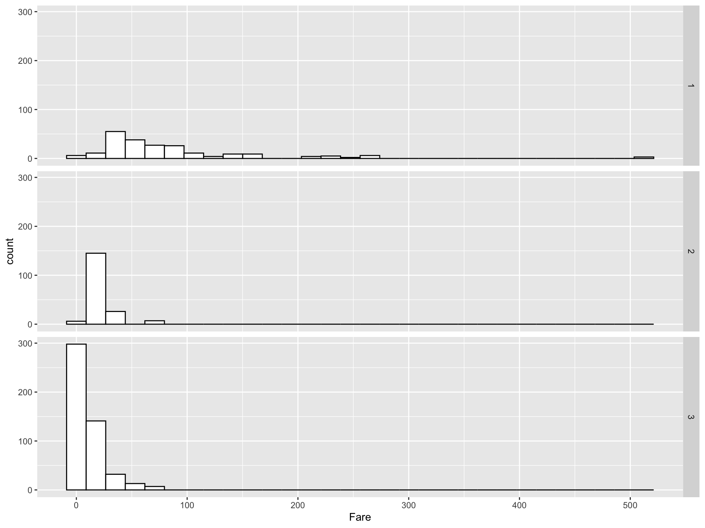

Chapter 6 Descriptive Statistics
6.1 Introduction to Statistics
6.1.1 Some Basic Terminologies Used in Statistics
i Population
- The set of all possible elements in the universe of interest to the researcher
ii Sample
- A Sample is a subset (a portion or part) of the population of interest
- The sample must be a representative of the population of interest
iii Element
- Element is an entity or object which the information is collected.
- Eg: Student, household, farm, company, tomato plant
iv Variable
- A variable is a feature characteristic which has different ‘values’ or categories for different elements (items/subjects/individuals)
- Eg: Gender of client, brand of mobile phones, risk level, number of emails received per day, age of client, income of client
v Data
- Data are measurements or facts that are collected from a statistical unit/entity of interest
- We collect data on variables
- Data are raw numbers or facts that must be processed (analysed) to get useful information.
We get information from data.
Eg:
Variable: Age (in years) of client
Data: 21, 45, 18, 32, 30, 22, 23, 27
Information:
The mean age is 27.25 years
The minimum age is 18 years
The range of ages is 18-45
The percentage of clients below 25 years of age: 50%
vi Statistic
- Characteristic of a sample
- The value which calculated based on sample data
vii Parameter
- Characteristic of a population
- The value which calculated based on population data
viii Census
- When a researcher gathers data from the whole population for a given measurement, it is called a census
ix Sampling
- When a researcher gathers data from a sample of the population for a given measurement, it is called sampling
- The process of selecting a sample is also called sampling
Why take a sample instead of studying every member of the population ?
- Prohibitive cost of census
- Destruction of item being studied may be required
- Not possible to test or inspect all members of a population being studied.
6.1.2 Branches of Statistics

i Descriptive Statistics
- Descriptive statistics consists of organizing, summarizing and presenting data in an informative way.
- The main purpose of descriptive statistics is to provide an overview of the data collected.
- Descriptive statistics describes the data collected through frequency tables, graphs and summary measures (mean, variance, quartiles, etc.).
ii Inferential Statistics
- In inferential statistics sample data are used to draw inferences (i.e. derive conclusions) or make predictions about the populations from which the sample has been taken.
- This includes methods used to make decisions, estimates, predictions or generalizations about a population based on a sample.
- This includes point estimations, interval estimation, test of hypotheses, regression analysis, time series analysis, multivariate analysis, etc.
6.1.3 Types of Variables

6.1.3.1 Qualitative / Quantitative Variables
i Qualitative variable (Categorical variable)
- The characteristic is a quality.
- The data are categories.
- They cannot be given numerical values.
- However, it may be given a numerical label
- Qualitative variables are sometimes referred as categorical variables.
- Eg:
Gender:
Age group:
Education level:
A/L stream:
Degree type:
Hair colour:
FIT student batch:
Undergraduate level:
Grade that you can obtain for CM 1110/ CM1130
ii Quantitative variable
- The characteristic is a quantity
- The data are numbers
- Quantitative data require numeric values that indicate how much or how many.
- They are obtained by counting or measuring with some scale
- Eg:
Number of family members:
Number of emails received per day:
Weight of a student:
Age:
Credit balance in the SIM card:
Time remaining in class:
Temperature:
Marks
6.1.3.2 Discrete/ Continuous Variables
- Quantitative variables can be classified as either discrete or continuous.
i Discrete Variables
- Quantitative
- Usually the data are obtained by counting
- There are impossible values between any two possible values
- Eg:
Number of family members:
Number of emails received per day:
ii Continuous Variables
- Quantitative
- Usually, the data are obtained by measuring with a scale
- There are no impossible values between any two possible values.(any value between any two possible values is also a possible value)
- i.e a continuous variable can take any value within a specified range.
- Eg:
Weight of a student:
Age:
Credit balance in the SIM card:
Time remaining in class:
Temperature:
Marks
6.1.4 Scales of Measurements

- There are four levels of measurements called, nominal, ordinal, interval and ratio.
- Each levels has its own rules and restrictions
- Different levels of measurement contains different amount of information with respect to whatever the data are measuring
i Nominal Scale
- Qualitative
- No order or ranking in categories.
- These categories have to be mutually exclusive, i.e. it should not be possible to place an individual or object in more than one category
- A name of a category can be substituted by a number, but it will be mere label and have no numerical meaning
ii Ordinal Scale
- Qualitative
- Categories can be ordered or ranked
- A name of a category can be substituted by a number, but such a sequence does not indicate absolute quantities.
- Difference between any two numbers on the scale does not have a numerical meaningful.
- It cannot be assumed that the differences between adjacent numbers on the scale are equal.
iii Interval Scale
- Quantitative
- Data can be ordered or ranked
- There is no absolute zero point. Zero is only an arbitrary point with which other values can compare
- Difference between two numbers is a meaningful numerical value
- Ration of two numbers is not a meaningful numerical value.
iv Ratio Scale
- Quantitative
- Highest level of measurement
- There exist an absolute zero point (It has a true zero point)
- Ratio between different measurements is meaningful
6.2 Presentation of Data
The sinking of the Titanic is one of the most infamous shipwrecks in history.
On April 15, 1912, during her maiden voyage, the widely considered “unsinkable” RMS Titanic sank after colliding with an iceberg. Unfortunately, there weren’t enough lifeboats for everyone onboard, resulting in the death of 1502 out of 2224 passengers and crew
Here’s a quick summary of our variables:
| Variable Name | Description |
|---|---|
| PassengerID | Passenger ID (just a row number, so obviously not useful for prediction) |
| Survived | Survived (1) or died (0) |
| Pclass | Passenger class (first, second or third) |
| Name | Passenger name |
| Gender | Passenger Gender |
| Age | Passenger age |
| SibSp | Number of siblings/spouses aboard |
| Parch | Number of parents/children aboard |
| Ticket | Ticket number |
| Fare | Fare |
| Cabin | Cabin |
| Embarked | Port of embarkation (S = Southampton, C = Cherbourg, Q = Queenstown) |
6.2.1 Tabular Presentations of Data
Raw Data
- Raw data are collected data that have not been organized numerically
- Eg: Passenger age
## PassengerId Survived Pclass
## 1 1 0 3
## 2 2 1 1
## 3 3 1 3
## 4 4 1 1
## 5 5 0 3
## 6 6 0 3
## Name Sex Age SibSp Parch
## 1 Braund, Mr. Owen Harris male 22 1 0
## 2 Cumings, Mrs. John Bradley (Florence Briggs Thayer) female 38 1 0
## 3 Heikkinen, Miss. Laina female 26 0 0
## 4 Futrelle, Mrs. Jacques Heath (Lily May Peel) female 35 1 0
## 5 Allen, Mr. William Henry male 35 0 0
## 6 Moran, Mr. James male NA 0 0
## Ticket Fare Cabin Embarked
## 1 A/5 21171 7.2500 S
## 2 PC 17599 71.2833 C85 C
## 3 STON/O2. 3101282 7.9250 S
## 4 113803 53.1000 C123 S
## 5 373450 8.0500 S
## 6 330877 8.4583 Q## [1] 22 38 26 35 35 NA 54 2 27 14 4 58 20 39 14 55 2 NA 31 NA 35 34 15 28 8
## [26] 38 NA 19 NA NA 40 NA NA 66 28 42 NA 21 18 14An array
- An array is an arrangement of raw numerical data in ascending or descending order of magnitude.
- Eg: Passenger age
## [1] 2 2 4 8 14 14 14 15 18 19 20 21 22 26 27 28 28 31 34 35 35 35 38 38 39
## [26] 40 42 54 55 58 66Frequency Table (Frequency Distributions)
- A frequency table (frequency distribution) is a listing of the values a variable takes in a data set, along with how often (frequently) each value occurs
- frequency can be recorded as a
- frequency or count: the number of times a value occurs, or
- percentage frequency: the percentage of times a value occurs
- Percentage frequency can be calculated as,
\[Percentage frequency = \frac{a}{b} \times100 \%\]
- The objective of constructing a frequency table are as follows
- to organize the data in a meaningful manner
- to determine the nature or shape of the distribution
- to draw charts and graphs for the presentation of data
- to facilitate computational procedures for measures of average and spread
- to make comparisons between different data sets
- There are two basic types of frequency tables
- Simple frequency tables (Ungrouped frequency distribution)
- Grouped frequency distribution
6.2.1.1 Simple frequency table (Ungrouped frequency distribution)
- Each possible value or category is taken as a class
- More suitable for
- Qualitative variables
- Discrete variables
- Sometimes construct for continuous variables when there is a small number of possible values between the minimum and maximum.
Examples:
CASE I:
Example 1
The native countries of 56 students from a certain education institute are as follows:
## [1] "SL" "BD" "SL" "SL" "SL" "SL" "IN" "SL" "SL" "SL" "BD" "SL" "SL" "SL" "IN"
## [16] "SL" "SL" "BD" "SL" "SL" "SL" "SL" "SL" "SL" "SL" "SL" "SL" "MD" "SL" "SL"
## [31] "SL" "SL" "SL" "SL" "PK" "MD" "PK" "SL" "SL" "SL" "SL" "SL" "PK" "MD" "SL"
## [46] "SL" "SL" "SL" "SL" "SL" "SL" "SL" "SL" "SL" "MD" "MD"BD- Bangladesh, IN-India, MD-Maldives, PK-Pakistan, SL- Sri Lanka
Construct a frequency table
## Native Country Count Percentage (%)
## Bangladesh 3 5.357
## India 2 3.571
## Maldives 5 8.929
## Pakistan 3 5.357
## Sri Lanka 43 76.786
## Total 56 100.000CASE II:
Example 2
The grades of 30 students for Statistics are as follows:
## [1] "B" "C" "B" "D" "B" "C" "C" "A" "B" "C" "C" "B" "E" "B" "B" "D" "D" "F" "B"
## [20] "D" "D" "A" "B" "A" "B" "C" "E" "A" "A"Construct a frequency table
## Grade Count Percentage (%)
## A 5 17.241
## B 10 34.483
## C 6 20.690
## D 5 17.241
## E 2 6.897
## F 1 3.448
## Total 29 100.000CASE III:
Example 3
The number of family members of a sample of undergraduates of Batch 19 are as follows:
## [1] 7 5 3 4 5 4 3 6 4 4 5 2 7 4 5 6 4 4 3 5Construct a frequency table
## Number of family members Count Percentage (%)
## A 5 17.241
## B 10 34.483
## C 6 20.690
## D 5 17.241
## E 2 6.897
## F 1 3.448
## Total 29 100.000CASE IV:
Example 4
The ages (in years) of a sample of undergraduates of Batch 19 are as follows:
## [1] 21 22 22 23 22 24 24 23 21 22 23 22 22 23 21 21 22 23 22 23Construct a frequency table
## Age (years) Count Percentage (%)
## A 5 17.241
## B 10 34.483
## C 6 20.690
## D 5 17.241
## E 2 6.897
## F 1 3.448
## Total 29 100.0006.2.1.2 Grouped frequency distribution
- A grouped frequency distribution (table) is obtained by constructing classes (or intervals) for the data and then listing the corresponding number of values in each interval.
- Suitable for quantitative variables with large number of possible values in the range of data.
- Note that when items have been grouped in this way, their individual values are lost.
- When studying about frequency distributions it is very important to know the meaning of the following terms
i Class intervals
- In a frequency distribution the total range of the observations are divided into a number of classes. Those are called class intervals
- Eg: Class intervals: 10-14, 15-19, 20-24, …, 40-44
ii Class limits
- Class limits are the smallest and largest piece of data value that can fall into a given class.
- In the class interval 10-14, the end numbers, 10 and 14, are called class limits
- The smaller number (10) is the lower class limit
- The larger number (14) is the upper class limit
iii Class boundaries
- Class boundaries are obtained by adding the upper limit of one class interval to the lower limit of the next-higher class interval and dividing by 2.
- Class boundaries are also called True class limits
- Class boundaries should not coincide with actual observations
| Class interval | Class boundaries |
|---|---|
| 10 - 14 | 9.5 – 14.5 |
| 15 - 19 | 14.5 – 19.5 |
| 20 - 24 | 19.5 – 24.5 |
| 25 - 29 | 24.5 – 29.5 |
| 30 - 34 | 29.5 – 34.5 |
| 35 - 39 | 34.5 – 39.5 |
| 40 - 44 | 39.5 – 44.5 |
iv The size or width of a class interval
- The size or width of a class interval is the difference between the lower and upper class boundaries
- It is also referred to as the class width, class size, or class length
- Eg: The class width for the class 10-14 is = 14.5-9.5 = 5
v The class mark ( Midpoint of the class)
- Midpoint of the class
- Also called as class midpoint
- \(\text{Midpoint of the class} = \frac{\text{Lower limit} + \text{Upper limit}}{2}\)
or
- \(\text{Midpoint of the class} = \frac{\text{Lower boundary} + \text{Upper boundary}}{2}\)
vi Open class intervals
A class interval that, at least theoretically, has either no upper class limit or no lower class limit indicated is called an open class interval
For example, referring to age groups of individuals, the class interval “65 year and over” is an open class interval
Rules and Practices for constructing grouped frequency tables
- Every data value should be in an interval
- The intervals should be mutually exclusive
- The classes of the distribution must be arrayed in size order.
- The number of classes not less than 5 or not greater than 15 is recommended.
- The following formula is often used to determine the number of classes: If n is the number of observations, then
\[\text{Number of classes} = \sqrt{n}\]
\[\text{Width of the class interval} = \frac{Range}{\sqrt{n}}= \frac{Min-Max}{\sqrt{n}}\]
- Data should be represented within classes having limits which the data can attain
- Classes should be continuous
- By convention, the beginning of the interval is given the appropriate exact value, rather than the end.
Eg: intervals of 0-49, 50-99,100-149 would be preferred over the intervals 1-50, 51-100, 101-150 etc. - The number f observations falling into each category or class interval (class frequency) can be easily found using tally marks.
Examples:
In a grouped frequency distribution, class intervals can be constructed in different ways
Example 1
| Class interval | Number of students |
|---|---|
| 10 - 14 | 4 |
| 15 - 19 | 5 |
| 20 - 24 | 11 |
| 25 - 29 | 9 |
| 30 - 34 | 6 |
| 35 - 39 | 3 |
| 40 - 44 | 2 |
Example 2
| Salary | Number of employees |
|---|---|
| 0 – 1999 | 1 |
| 2000 – 3999 | 31 |
| 4000 – 5999 | 18 |
| 6000 – 7999 | 4 |
| 8000 – 9999 | 2 |
| 10000 - 11999 | 1 |
| 12000 – 13999 | 0 |
| 14000 – 15999 | 0 |
| 16000 – 17999 | 1 |
| 18000 -19999 | 1 |
| 20000-21999 | 1 |
| Salary | Number of employees |
|---|---|
| 0 – 1999 | 1 |
| 2000 – 3999 | 31 |
| 4000 – 5999 | 18 |
| 6000 – 7999 | 4 |
| 8000 – 9999 | 2 |
| 10000 - 15999 | 1 |
| 16000 – 21999 | 3 |
| Total | 60 |
Example 3
| Salary | Number of employees |
|---|---|
| Less than 2000 | 1 |
| 2000 – 2999 | 11 |
| 3000 – 3999 | 20 |
| 4000 – 5999 | 18 |
| 6000 – 9999 | 6 |
| Greater than or equal to 10000 | 4 |
| Total | 60 |
6.2.1.3 Two-way frequency table
- Cross tabulation, Cross classification table, Contingency table, Two-way table
- Display the relationship between two or more qualitative variables (categorical variables (nominal or ordinal))
## # A tibble: 2 x 4
## Survived First Second Third
## <chr> <dbl> <dbl> <dbl>
## 1 died 80 97 372
## 2 Survived 136 87 119## # A tibble: 2 x 4
## Survived First Second Third
## <chr> <dbl> <dbl> <dbl>
## 1 died 0.37 0.53 0.76
## 2 Survived 0.63 0.47 0.246.2.2 Graphic Presentations of Data
- A diagram is a visual form for presentation of statistical data.
- The form of the diagram varies according to the nature of the data
6.2.2.1 Describing Qualitative Data
- Bar chart / Pie chart
- Suitable for
- Qualitative variables (nominal or ordinal)
- Discrete variables (when the number of bars or number of different values is small)
I Bar Chart
- A bar graph uses bars to represent discrete categories of data
- It can be drawn either on horizontal (more common) or vertical base
- A rectangle of equal width is drawn for each category
- The height (in vertical bar chart) or the length (in horizontal bar chart) of the rectangle is equal to the category’s frequency or percentage.
i Simple Bar Chart
- Only one categorical variable can be presented
- Often used in conjunction with simple frequency tables
- The bars do not touch each other
- The gaps between adjacent bars are same in length


ii Component Bar Chart
- Sub divided bar chart/ Stacked bar chart
- Use to compare two or more qualitative variables (nominal or ordinal)
- Often used in conjunction with two way tables
- Start by drawing a simple bar chart with the total figures.
- The bars are then divided into the component parts
- Can be drawn on absolute figures or percentages
- The various components should be kept in the same order in each bar
- To distinguish different components from one another, different colours or shades can be used
## # A tibble: 2 x 4
## Survived First Second Third
## <chr> <dbl> <dbl> <dbl>
## 1 died 80 97 372
## 2 Survived 136 87 119
Percentage component bar chart
- When sub-divided bar chart is drawn on percentage basis it is called percentage bar chart
- The various components are expressed as percentage to the total
- All bars are equal in height
## # A tibble: 2 x 4
## Survived First Second Third
## <chr> <dbl> <dbl> <dbl>
## 1 died 0.370 0.527 0.758
## 2 Survived 0.630 0.473 0.242
iii Multiple Bar Chart
- Compound bar chart/ Cluster bar chart
- Use to compare two or more qualitative variables (nominal or ordinal)
- Often used in conjunction with two way tables
- These bar charts are drawn side by side
## # A tibble: 2 x 4
## Survived First Second Third
## <chr> <dbl> <dbl> <dbl>
## 1 died 37.0 52.7 75.8
## 2 Survived 63.0 47.3 24.2
II Pie Chart
- A pie chart is a circle divided into slices according to the percentage of the data values in each category
- Each slice represents a category of a given variable
- Pie chart can be used effectively to summarize a single categorical variable if there are not too many different categories
- In this diagram, the total of all the given items is equated to 360 degrees and the angles representing different items are proportionately calculated.
- The sum of the angles representing different items is equal to 360 degrees
## # A tibble: 3 x 3
## `Passenger class` Count Percentage
## <chr> <int> <dbl>
## 1 First 216 24.2
## 2 Second 184 20.7
## 3 Third 491 55.1
6.2.2.2 Describing Quantitative Data
- Pictogram /Histogram/ Stem and leaf plot/ Dot plot / Box plot/ Scatter plot
I Pictogram/ Pictograph
- A pictogram uses picture symbols to convey the meaning of statistical information.
- A pictogram uses an icon to represent a quantity of data values in order to decrease the size of the graph
- A key must be used to explain the icon
Example: Number of cars sold by ABC company from 2010 to 2012
| Year | Number of cars sold by ABC company |
|---|---|
| 2017 | 3000 |
| 2018 | 4500 |
| 2019 | 6350 |

II Histogram
- Histogram looks similar to bar chart since it also has bars.
- However, it is different from a bar chart in a number of aspects.
- One main difference is that in the histogram, the bars are drawn attached to each other; there are no gaps between bars like in a bar chart.
- Histogram is used to show the shape of the distribution of a continuous variable.
- However, the histogram is also used for discrete variables when the data are grouped in to class intervals.
- In a histogram, the area of a bar should be proportional to the frequency of the corresponding class.
- If all the bars have the same width, then the height of a bar can represent the frequency.
- The bar corresponding to a class interval should be drawn from the lower class boundary to the upper class boundary. In this way there will be no gaps between the bars.
Example: The marks(out of 50) of a group of students are recorded in the accompanying table. Draw a histogram for the data
| Marks | Number of students |
|---|---|
| 10 - 14 | 4 |
| 15 - 19 | 5 |
| 20 - 24 | 11 |
| 25 - 29 | 9 |
| 30 - 34 | 6 |
| 35 - 39 | 3 |
| 40 - 44 | 2 |
| Total | 40 |

Example 2

III Frequency polygon
- If the mid-point of the top of each block in a histogram is joined by a straight line, a frequency polygon is produced.
- This is done under the assumption that the frequencies in a class-interval are evenly distributed throughout the class
Example: The marks(out of 50) of a group of students are recorded in the accompanying table. Draw a frequency polygon for the data
| Marks | Number of students |
|---|---|
| 10 - 14 | 4 |
| 15 - 19 | 5 |
| 20 - 24 | 11 |
| 25 - 29 | 9 |
| 30 - 34 | 6 |
| 35 - 39 | 3 |
| 40 - 44 | 2 |
| Total | 40 |
IV Frequency curve
- A frequency curve is drawn by smoothing the frequency polygon.
- It is smooth in such a way that the sharp turns are avoided
Example: The marks(out of 50) of a group of students are recorded in the accompanying table. Draw a frequency curve for the data
| Marks | Number of students |
|---|---|
| 10 - 14 | 4 |
| 15 - 19 | 5 |
| 20 - 24 | 11 |
| 25 - 29 | 9 |
| 30 - 34 | 6 |
| 35 - 39 | 3 |
| 40 - 44 | 2 |
| Total | 40 |
frequency curves arising in practice take on certain characteristics shapes as shown bellow

- The symmetrical or bell shaped frequency curves are characterized by the fact that observations equidistant from the central maximum have the same frequency. An important example is the normal curve.
- In the moderately asymmetrical or skewed frequency curves the tail of the curve to one side of the central maximum is longer than that to the other. If the longer tail occurs to the right the curve is said to be skewed to the right or to have positive skewness.While if the reverse is true the curve is said to be skewed to the left or to have negative skewness.
- In a J shaped or reverse J shaped curve a maximum occurs at one end.
- A U shaped frequency curve has maxima at both ends.
- A bimodal frequency curve has two maxima. These appear as two distinct peaks (local maxima) in the frequency curve.When the two modes are unequal the larger mode is known as the major mode and the other as the minor mode.
- A multimodal frequency curve has more than two maxima.